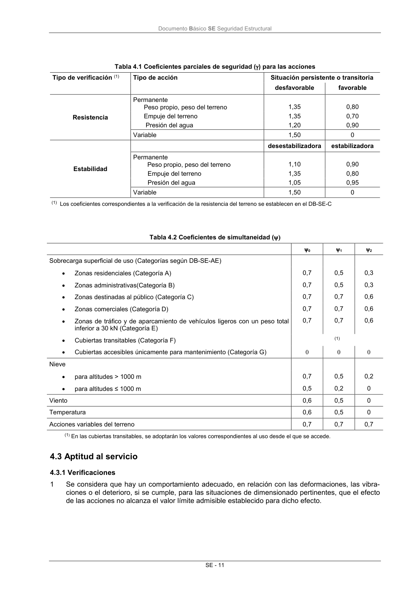

DB-SE · 4.2.4 Valor de cálculo de la resistencia · versión 2019-12-20 · capa oficial
Formatos: JSON compacto · Markdown · PDF fuente
Ámbito del documento · texto del ámbito · documento y tablas
ID técnico a0047 · PDF pág. 16-17 · jerarquía no validada por persona · contrastado con el literal de la página 16 (candidato tipográfico); no validado por persona · padre: raíz
4.2.4 Valor de cálculo de la resistencia 1 El valor de cálculo de la resistencia de una estructura, elemento, sección punto o unión entre ele- mentos se obtiene de cálculos basados en sus características geométricas a partir de modelos de comportamiento del efecto analizado, y de la resistencia de cálculo, fd, de los materiales implicados, que en general puede expresarse como cociente entre la resistencia característica, fk, y el coeficien- te de seguridad del material. 2 Por lo que respecta al material o materiales implicados, la resistencia de cálculo puede asimismo expresarse como función del valor medio del factor de conversión de la propiedad implicada, deter- minada experimentalmente, para tener en cuenta las diferencias entre las condiciones de los ensa- yos y el comportamiento real, y del coeficiente parcial para dicha propiedad del material. 3 En su formulación más general, la resistencia de cálculo puede expresarse en función de las varia- bles antedichas, y el coeficiente parcial para el modelo de resistencia y las desviaciones geométri- cas, en el caso de que estas no se tengan en cuenta explícitamente. Documento Básico SE Seguridad Estructural SE - 11 Tabla 4.1 Coeficientes parciales de seguridad () para las acciones Tipo de verificación (1) Tipo de acción Situación persistente o transitoria desfavorable favorable Resistencia Permanente Peso propio, peso del terreno 1,35 0,80 Empuje del terreno 1,35 0,70 Presión del agua 1,20 0,90 Variable 1,50 0 Estabilidad desestabilizadora estabilizadora Permanente Peso propio, peso del terreno 1,10 0,90 Empuje del terreno 1,35 0,80 Presión del agua 1,05 0,95 Variable 1,50 0 (1)Los coeficientes correspondientes a la verificación de la resistencia del terreno se establecen en el DB-SE-C Tabla 4.2 Coeficientes de simultaneidad ( 0 1 2 Sobrecarga superficial de uso (Categorías según DB-SE-AE) Zonas residenciales (Categoría A) 0,7 0,5 0,3 Zonas administrativas(Categoría B) 0,7 0,5 0,3 Zonas destinadas al público (Categoría C) 0,7 0,7 0,6 Zonas comerciales (Categoría D) 0,7 0,7 0,6 Zonas de tráfico y de aparcamiento de vehículos ligeros con un peso total inferior a 30 kN (Categoría E) 0,7 0,7 0,6 Cubiertas transitables (Categoría F) (1) Cubiertas accesibles únicamente para mantenimiento (Categoría G) Nieve para altitudes > 1000 m 0,7 0,5 0,2 para altitudes ≤ 1000 m 0,5 0,2 0 Viento 0,6 0,5 0 Temperatura 0,6 0,5 0 Acciones variables del terreno 0,7 0,7 0,7 (1) En las cubiertas transitables, se adoptarán los valores correspondientes al uso desde el que se accede.

PDF fuente redistribuible: copia fiel enlazada en esta página (SHA256 verificado).